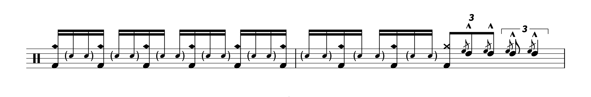

Transcription: “The XIth Commandment” — James Bradley, Jr. with Chuck Mangione

Back in college, one of my roommates got a Chuck Mangione vinyl record as a gift from our other roommate (roommate A was the only one in the house with a turntable, while roommate B found the LP at Goodwill). The album is Tarantella, and when I looked at the credits on the sleeve, I saw that Steve Gadd is actually the drummer on the record. He gets a pretty cool showcase on a tune called “The XIth Commandment”.
I tried to find the album on streaming, but it hasn’t made it on there yet. In fact, it doesn’t look like it ever made it CD, just vinyl and cassette (you can stream a vinyl rip on YouTube). So instead, I gave a listen to the original studio cut of songs like “The XIth Commandment”.
Some people have already transcribed parts of Steve’s playing on the Tarantella album, such as this video, as well as that famous Steve Gadd transcription book from the 80s. It’s very interesting how this now–obscure album seems to have a special place for many drummers from back in the day.
Anyhoo, the studio rendition of “The XIth Commandment” (from the album Feels So Good) still has a fun little drum display at the end of the tune, courtesy of James Bradley, Jr. (on Discogs, James and another drummer named Dan D’Imperio are credited on the Tarantella album, but I never saw them on the jacket).
The transcription highlights the last 18 bars of the tune, where James does some big fills around a few ensemble hits. The Charleston rhythm is a prominent motif (dotted 8th + 16th), as are different Latin–esque patterns (like the tresillo, or dotted 8th licks). James shows off some fast hands, especially during the finale which sees him doing a big 16th note triplet run down the toms. There’s also this challenging flam lick:
I’m pretty sure the flams are all played off of the same hand. Side note: I wish there was a name for these, i.e. the opposite of hand–to–hand flams.
Overall, the playing here is very hip and progressive, with a lot of busy funk playing that’s become pretty standard vocabulary for drummers these days.
“The XIth Commandment” on Songwhip.
Posted on April 3, 2022
Tags: 2022 • Transcription • Chuck Mangione • James Bradley, Jr